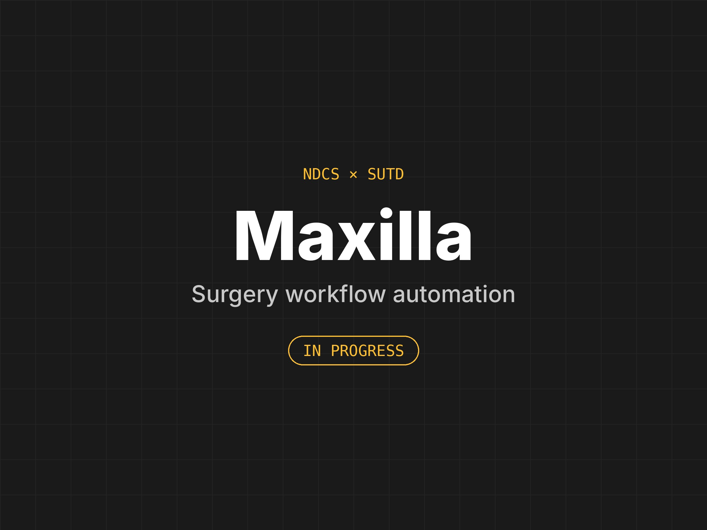

1. Maxilla Surgery Workflow Automation
[In Progress]Project Overview
We are working with the National Dental Centre Singapore to improve the efficiency of their workflow for designing patient-specific implants used in upper-jaw (maxilla) surgery. Today, much of this design work is done by hand by specialist engineers, which makes each case time-intensive.
Our Approach
Our team of three is developing and testing a Python-based prototype that automates the repetitive steps in the design process. Clinical decisions stay with the surgeons and engineers: the tool proposes, and they review and approve.
This project is ongoing, so details are kept high-level.